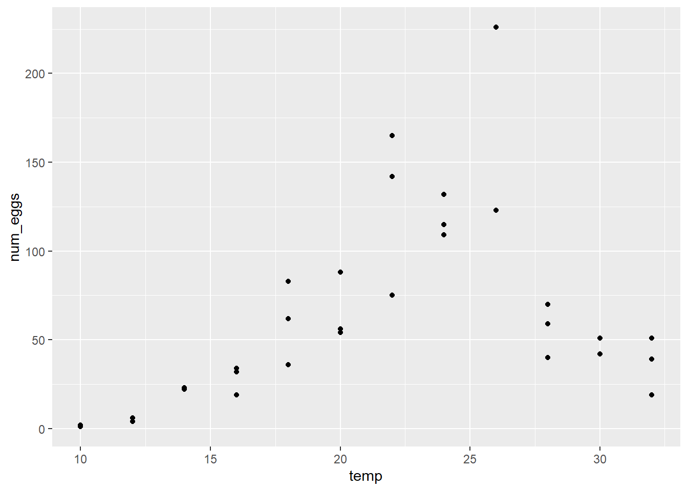
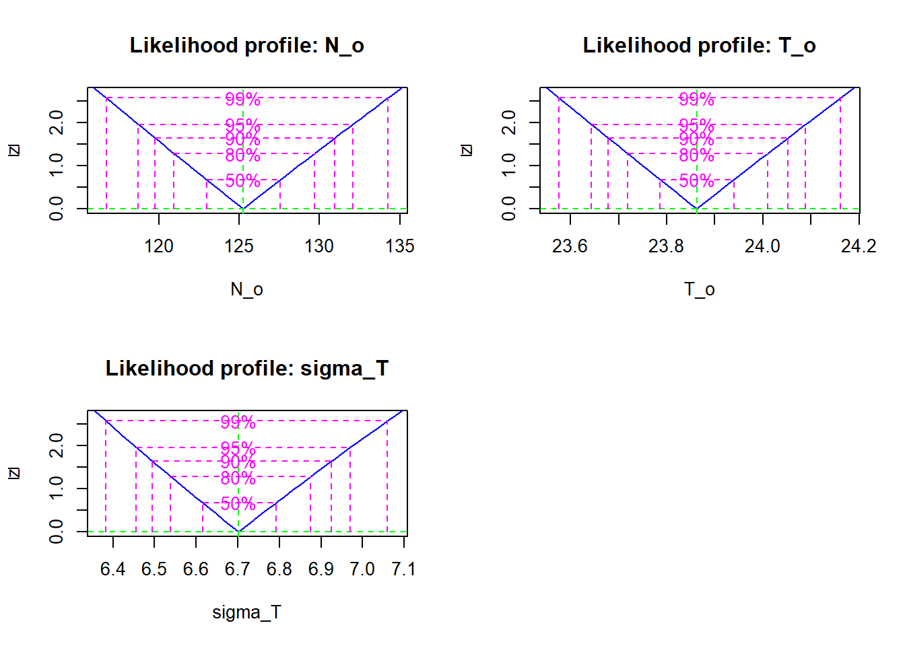
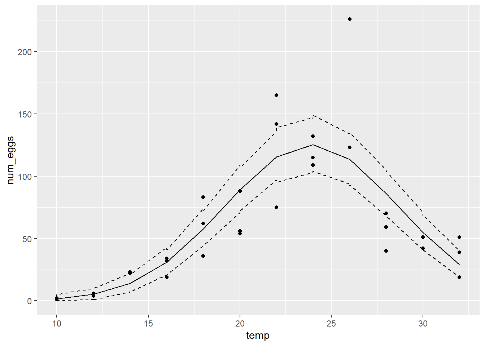
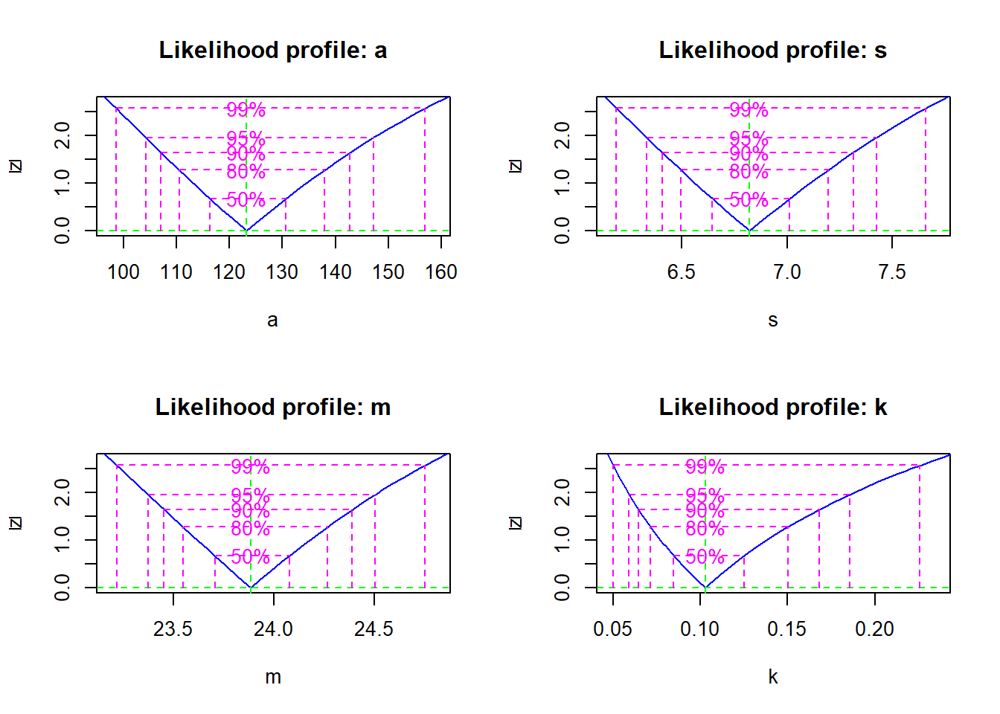
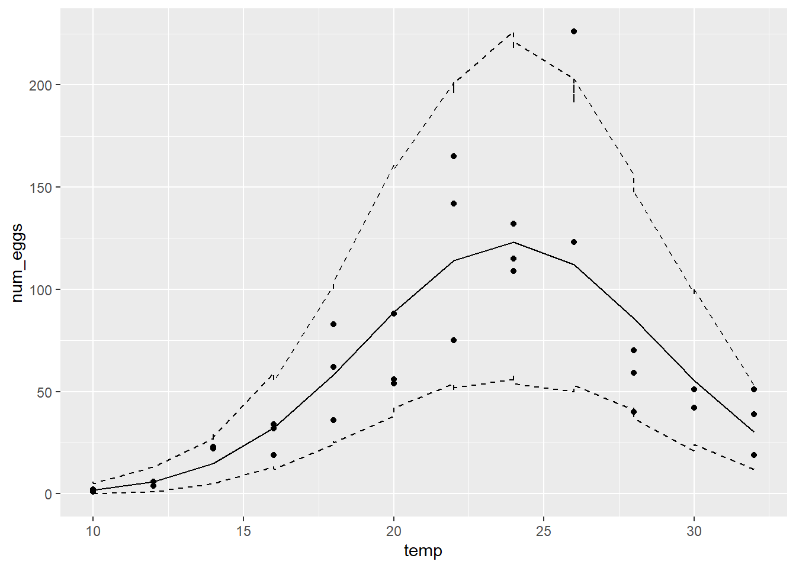

Le tableau de données thermal_range.csv représente le résultat d’une expérience visant à déterminer l’effet de la température (temp) sur le nombre d’oeufs (num_eggs) produits par une espèce de moustique. Trois réplicats ont été mesurés pour des valeurs de température entre 10 et 32 degrés Celsius.
therm <- read.csv("../donnees/thermal_range.csv")
head(therm)## temp num_eggs
## 1 10 1
## 2 10 1
## 3 10 2
## 4 12 4
## 5 12 4
## 6 12 6Nous supposons que le nombre moyen d’oeufs produits suit une fonction gaussienne centrée sur une température optimale. (Cette fonction a la même forme qu’une distribution normale, mais il ne s’agit pas d’une probabilité).
\[N = N_o \exp \left( - \frac{(T - T_o)^2}{\sigma_T^2} \right) \]
Dans cette équation, \(N\) est le nombre moyen d’oeufs produits pour une température \(T\), \(T_o\) est la température optimale, \(N_o\) est le nombre d’oeufs produits à \(T_o\) et \(\sigma_T\) représente la tolérance (plus \(\sigma_T\) est élevé, plus la production décroit lentement autour de l’optimum).
Le nombre d’oeufs semble-t-il atteindre un maximum avec une décroissance symétrique des deux côtés de ce maximum, tel que prévu par l’équation ci-dessus?
La variance entre les réplicats semble-t-elle homogène?
Solution
library(ggplot2)
ggplot(therm, aes(x = temp, y = num_eggs)) +
geom_point()
Le nombre d’oeufs semble atteindre un maximum autour de 25 degrés. La variance ne semble pas homogène, étant plus grande pour les températures où le nombre d’oeufs est plus grand.
Pourquoi est-il préférable ici d’utiliser une distribution de Poisson plutôt qu’une distribution normale pour représenter la variation aléatoire du nombre d’oeufs autour de la valeur moyenne prédite?
Solution
Il s’agit de données de comptage (nombres entiers > 0) et leur variance semble augmenter avec la moyenne, comme le prévoit la distribution de Poisson.
dpois(y, lambda, log = TRUE) permet de calculer le log de la probabilité d’un vecteur de données y suivant une distribution de Poisson avec des valeurs moyennes lambda.Solution
temp_nll <- function(N_o, T_o, sigma_T) {
mu <- N_o * exp(-((therm$t-T_o)/sigma_T)^2)
-sum(dpois(therm$num_eggs, lambda = mu, log = TRUE))
}mle2 pour estimer les trois paramètres du modèle selon le maximum de vraisemblance.Pour ce problème, il est nécessaire de spécifier des bornes pour chaque paramètre, afin d’éviter que l’optimisateur ne s’éloigne trop des valeurs plausibles. Dans la fonction mle2, les bornes inférieures et supérieures sont données par les argument lower et upper, ex.: mle2(..., start = list(...), lower = c(no = 1, to = 5, s_t = 1), upper = c(...). Notez que ces arguments sont spécifiés par un vecteur c(...) tandis que start (les valeurs initiales) sont spécifiées par une liste.
Vous pouvez essayer différentes valeurs pour les bornes, cependant les bornes inférieures de \(N_o\) et \(\sigma_T\) devraient être au moins 1, la borne supérieure de \(\sigma_T\) ne devrait pas trop dépasser l’étendue (max-min) des températures testées; de même, les bornes pour \(T_o\) devraient être des valeurs réalistes de la température.
Note: Vous pouvez ignorer l’avertissement Warning: bounds can only be used with method L-BFGS-B (or Brent). Cependant, si vous obtenez une erreur, ré-essayez en ajustant les bornes des paramètres.
Solution
library(bbmle)## Loading required package: stats4res <- mle2(temp_nll, start = list(N_o = 50, T_o = 20, sigma_T = 2),
lower = c(N_o = 1, T_o = 0, sigma_T = 1),
upper = c(N_o = 1000, T_o = 50, sigma_T = 20))## Warning in optim(par = c(N_o = 50, T_o = 20, sigma_T = 2), fn = function (p) :
## bounds can only be used with method L-BFGS-B (or Brent)res##
## Call:
## mle2(minuslogl = temp_nll, start = list(N_o = 50, T_o = 20, sigma_T = 2),
## lower = c(N_o = 1, T_o = 0, sigma_T = 1), upper = c(N_o = 1000,
## T_o = 50, sigma_T = 20))
##
## Coefficients:
## N_o T_o sigma_T
## 125.254248 23.862510 6.702089
##
## Log-likelihood: -232.92Solution
pro <- profile(res)
plot(pro)
confint(pro)## 2.5 % 97.5 %
## N_o 118.725387 132.059041
## T_o 23.643472 24.088414
## sigma_T 6.456217 6.970186L’approximation quadratique serait bonne car la vraisemblance profilée pour chaque paramètre (après transformation racine carrée) suit une droite.
Ajoutez une colonne au jeu de données pour les prédictions moyennes du modèle (les \(\lambda\) du modèle de Poisson pour chaque observation), obtenues en remplaçant les estimés du maximum de vraisemblance dans l’équation de \(N\) ci-dessus.
Simulez 1000 jeux de données à partir de la distribution de Poisson avec les valeurs de \(\lambda\) estimées. Pour générer un jeu de données, utiliser rpois(n, lambda) où \(n\) est le nombre d’observations (le nombre de rangées du jeu de données original) et \(\lambda\) est la colonne des prédictions moyennes. Pour générer 1000 jeux de données, utilisez replicate. Le résultat de replicate devrait être une matrice de \(n\) rangées et 1000 colonnes (1 colonne par simulation).
Pour obtenir un intervalle de prédiction à 95% pour chaque observation, calculez les quantiles appropriés pour chaque rangée de la matrice des simulations avec apply. Par exemple, apply(sim_mat, 1, quantile, prob = 0.025) applique la fonction quantile à chaque rangée de sim_mat, avec l’argument prob de quantile fixé à 0.025. Faites de même pour le quantile à \(p = 0.975\) et vous obtiendrez deux vecteurs pour les bornes inférieures et supérieures de l’intervalle, que vous pouvez ajouter au jeu de données.
Note: Ces intervalles de prédiction supposent que les estimés des paramètres sont exacts et ignorent donc leur incertitude.
temp et num_eggs, votre jeu de données contient trois colonnes représentant respectivement les prédictions moyennes, ainsi que les bornes inférieures et supérieures de l’intervalle de prédiction à 95% pour chaque observation. Ajoutez la prédiction moyenne et l’intervalle au graphique de num_eggs vs. temp. Ex.: Avec ggplot, vous pouvez ajouter geom_line(aes(y = moy)) au graphique pour ajouter une ligne représentant la colonne moy des prédictions moyennes, même chose pour les deux lignes de l’intervalle.À partir des résultats, pouvez-vous dire que le modèle représente bien la tendance générale des données ainsi que leur variation aléatoire autour de cette tendance?
Solution
# Insertion des estimés obtenus en (d)
therm$mu <- 125.3 * exp(-((therm$t-23.9)/6.7)^2)
therm_sim <- replicate(1000, rpois(36, therm$mu))
therm$min <- apply(therm_sim, 1, quantile, prob = 0.025)
therm$max <- apply(therm_sim, 1, quantile, prob = 0.975)
library(ggplot2)
ggplot(therm, aes(x = temp, y = num_eggs)) +
geom_point() +
geom_line(aes(y = mu)) +
geom_line(aes(y = min), linetype = "dashed") +
geom_line(aes(y = max), linetype = "dashed")
Le modèle représente bien la tendance générale, mais sous-estime la variabilité. L’intervalle de prédiction à 95% contient à peine ~70% des observations (25/36).
Rappel: Dans la distribution de Poisson, la moyenne et la variance sont égales à \(\lambda\). Dans la distribution binomiale négative, la moyenne est égale à \(\mu\) et la variance égale à \(\mu + \mu^2/\theta\). Pour ce numéro, nous utiliserons \(k = 1/\theta\) comme paramètre. Si \(\theta > 0\), \(k\) quant à lui doit prendre une valeur supérieure ou égale à 0. Puisque la variance en fonction de \(k\) est \(\mu + k \mu^2\), la distribution de Poisson correspond au cas \(k = 0\).
Voici les principaux changements à apporter pour remplacer le modèle de Poisson par le modèle binomiale négatif:
Ajoutez le paramètre \(k\) à la fonction de log-vraisemblance. Remplacez l’appel à dpois par dnbinom(y, mu, size = 1/k, log = TRUE) où mu est la prédiction moyenne, donc équivalente au lambda de dpois.
Utilisez une borne inférieure de 0 pour le paramètre k dans mle2; la borne supérieure devrait être inférieure à 100.
Pour simuler les données, remplacez rpois par rnbinom et spécifiez les argument mu (prédiction moyenne) et size = 1/k.
Solution
# Fonction de vraisemblance, estimés et intervalles
temp_nll <- function(a, s, m, k) {
mu <- a * exp(-((therm$t-m)/s)^2)
-sum(dnbinom(therm$num_eggs, size = 1/k, mu = mu, log = TRUE))
}
res <- mle2(temp_nll, start = list(a = 50, m = 20, s = 1, k = 1),
lower = c(a = 1, m = 0, s = 1, k = 0),
upper = c(a = 1000, m = 50, s = 20, k = 10))
res##
## Call:
## mle2(minuslogl = temp_nll, start = list(a = 50, m = 20, s = 1,
## k = 1), lower = c(a = 1, m = 0, s = 1, k = 0), upper = c(a = 1000,
## m = 50, s = 20, k = 10))
##
## Coefficients:
## a s m k
## 123.188369 6.821416 23.884264 0.102698
##
## Log-likelihood: -143.93plot(profile(res))
confint(profile(res))## 2.5 % 97.5 %
## a 104.20709233 147.2176826
## s 6.33138839 7.4248342
## m 23.37301405 24.5051418
## k 0.05916351 0.1855639La vraisemblance profilée des paramètres s’approche de l’approximation quadratique, sauf pour \(k\) où elle est non-quadratique et asymétrique.
# Prédictions selon les paramètres estimés
therm$mu <- 123.2 * exp(-((therm$t-23.9)/6.82)^2)
therm_sim <- replicate(1000, rnbinom(36, mu = therm$mu, size = 1/0.103))
therm$min <- apply(therm_sim, 1, quantile, prob = 0.025)
therm$max <- apply(therm_sim, 1, quantile, prob = 0.975)
library(ggplot2)
ggplot(therm, aes(x = temp, y = num_eggs)) +
geom_point() +
geom_line(aes(y = mu)) +
geom_line(aes(y = min), linetype = "dashed") +
geom_line(aes(y = max), linetype = "dashed")
Ici l’intervalle de prédiction à 95% contient 35/36 points (97%).
Solution
Le test du rapport de vraisemblance ne s’applique pas lorsque l’hypothèse nulle correspond à une limite des valeurs possibles du paramètre. Ici, le modèle de Poisson correspond au modèle binomial négatif avec \(k = 0\), qui est à la limite des valeurs possibles pour ce paramètre.
Solution
Oui, les prédictions du modèle sont plus en accord avec les observations et la log-vraisemblance du modèle binomial négatif (-144) est beaucoup plus élevée que celle du modèle de Poisson (-233).